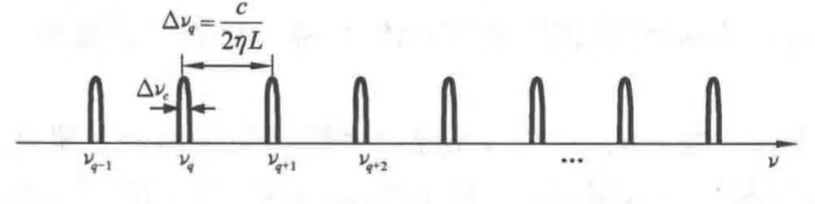
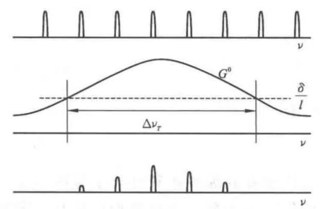

激光技术中应用的谐振腔，其尺度一般大于工作波长，特别是腔的横向尺寸.
如，圆形反射镜盘的半径\(a\gg \lambda\).
这种情况下，对F-P腔而言，可以假设均匀平面波是腔内电磁场的本征态.
什么叫电磁场的本征态？
为什么是F-P腔？
为什么均匀平面波不能作为有源F-P腔的本征模存在？
什么叫有源F-P腔？
有源腔就是包含增益介质的腔，无源腔就是不包含增益介质的腔.
严格的光腔模式理论表明：均匀平面波不能作为有源F-P腔的本征模存在.
但若满足条件：
$$a \gg \lambda$$更确切地说满足条件：
$$\frac{a^2}{L\lambda} \gg 1$$则腔内的最低损耗模式仍可以近似为平面波.
考虑均匀平面波在F-P腔中沿轴线方向往返传播的情形：
当光波在腔镜上反射时，入射光波场与反射光波场将会发生干涉，多次往复反射就会发生多光束干涉.
为了能在腔内形成稳定振荡，要求光场能因干涉而加强.
多光束相长干涉条件：
光波从某一点出发，经腔内往返一周再回到原来位置时，与初始出发光波的相位差为\(2\pi\)的整数倍.
若设均匀平面波在腔内往返一周时的相位滞后为\(\Delta\phi\)，则相长干涉条件可表示为：
当光波长与腔的光学长度满足上式时，将在腔内形成驻波.
\(L'\)一定的情况下，有：
腔内驻波的特征：达到谐振时，腔的光学长度应为半波长的整数倍.
上两式即为F-P腔中沿轴向传播的平面波谐振条件.
\(L'\)一定的谐振腔只对满足上式的光子才提供正反馈，使之达到谐振.
平行平面镜腔中的谐振频率只能随正整数\(q\)的不同取值而取一系列分立值.
在平行平面镜腔中，满足腔的谐振频率的沿轴线方向（纵向）形成的驻波场构成腔内电磁场的本征模式.
特点在腔的横截面内，场的振幅是均匀分布的，而沿腔的轴线方向（纵向）形成驻波，驻波的波节数由\(q\)决定.
腔内相邻两纵模的频率之差.
$$\Delta\nu_q = \nu_{q+1} - \nu_q = \frac{c}{2L'}$$
既满足腔的谐振频率，又满足振荡阈值条件的模，才可能在腔内实际存在.

若以\(\Delta\nu_T\)表示增益曲线高于阈值部分的频带宽度，则可能同时振荡的纵模数为：
$$N = \left[\frac{\Delta\nu_T}{\Delta\nu_q}\right] + 1$$物质的激发程度越高，\(\Delta\nu_T\)越大，能够同时振荡的纵模数越多.
腔越长，\(\Delta\nu_q\)越小，能够同时振荡的纵模数越多.
在利用锁模技术获得超短脉冲时，希望同时振荡的纵模数越多越好.
使光波沿一系列同轴圆孔单向传播，以模拟在平面开腔中的往复反射.
圆孔孔径等于腔镜直径.
相邻圆孔距离等于腔长.